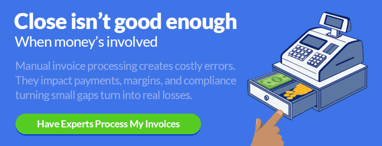
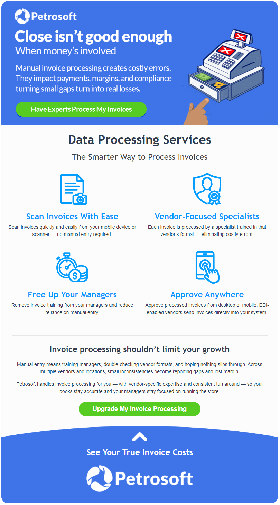
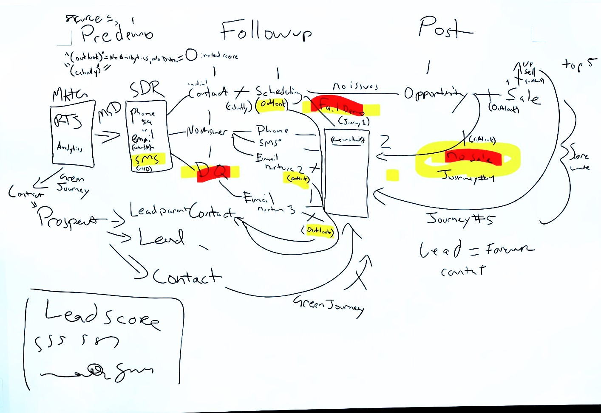

▶
▶I begin with the outcome.
Before I make the deliverable, I define what the work needs to accomplish and how I will know whether it worked.
Marketing strategy · Operations · Creative problem solving
My experience spans marketing, business strategy, and operations, but the common thread is how I approach the work: understand the real problem, learn what is needed, and build something practical that can keep improving.
Selected work
Three examples show the range of the portfolio: building a complete marketing program, improving campaign performance through testing, and making difficult technical material easier to understand.
The standard I use
Whether I am building an email, a video, a presentation, or a webpage, I use the same questions to judge the result: Is it useful? Is it honest? Can someone understand why it matters?
Before I make the deliverable, I define what the work needs to accomplish and how I will know whether it worked.
I look for real needs, questions, and pain points instead of assuming every audience should receive the same message.
I focus first on why something matters and what it changes in practical terms. The supporting detail comes after that.
I use visual hierarchy so the main point can register in seconds, with a clear path for anyone who wants to learn more.
I use strong visuals, personality, movement, and sometimes humor when they help an idea stay with the audience.
I make claims the company can support and communicate honestly. A short-lived reaction is never worth weakening long-term trust.
A repeatable approach
I begin with the right question, choose the tools the problem requires, and use the response to make my next decision better.
What needs to change?
What matters to them?
Which tools fit the problem?
Release and measure.
Feed learning forward.
Application 1 · Petrosoft
At Petrosoft, I brought audience research, segmentation, campaign strategy, creative execution, automation, sales support, measurement, and iteration together as one working program.
One company, different audiences
By testing different topics, formats, and language, I learned how Petrosoft audiences responded differently—and changed my work to fit them.
Individual convenience-store owners tend to respond to brass-tacks communication: what the product changes in the store, how it addresses a daily problem, and whether the company understands the realities of operating that business.
Existing and larger customers often engage more with strong graphics, statistics, product updates, and clear visual explanations that help them understand new value quickly.
The outbound ecosystem
I built a connected program that served customers, earned attention from prospects, and supported the teams responsible for turning interest into a real conversation.
I used these communications to show customers that Petrosoft was listening, improving, and willing to be judged by real outcomes.
Cold outreach should be respectful. I built content that gives independent store owners something useful first, then uses what they engage with to make later communication more relevant.
Templates and automated journeys help the company respond consistently, reinforce commitments, and continue conversations without depending on someone remembering every follow-up.
Trade shows create opportunities to meet new people, strengthen relationships over repeated events, and give prospects a memorable reason to engage. The marketing work begins before the show and continues well after it.
The trade-show system
An attendee list may contain an email address but no phone number, or the reverse. I used AI-assisted research across public business sources to fill legitimate gaps, improve the database, and make outreach more relevant. We did not buy lists; the starting point was event attendance, marketing consent, or publicly available business information.
Prizes and graphics helped earn attention, but they were one tactic within a longer process: introduce Petrosoft before the event, secure a booth visit, create a memorable interaction, and follow up in a way that reflects what the person showed interest in.
Event campaign system
I built different messages for the period before, during, and after each event. Together they created awareness, gave attendees a reason to visit, introduced the people behind Petrosoft, explained the offer, and kept the relationship moving afterward.
A concrete reward, limited availability, and a direct show-planner action gave attendees an immediate reason to remember the booth.
Spotlighting an experienced team member made the company feel more approachable and turned a general booth visit into a scheduled conversation.
Product innovation, industry expertise, relationship-building, and prizes were organized into distinct reasons to engage.
A thank-you, product recap, team imagery, and next-show invitation turned the event into a reason for continued conversation.
Testing attention
My emails using purposeful animated graphics tended to perform 25–50% better than comparable static work in overall click-through and conversion. Motion caught the eye, increased the time people spent with the message, and gave the main idea another chance to register.
I found it worked best when it demonstrated the problem, clarified a process, or directed attention toward the next action.


Motion modules
I used animation for four recurring purposes: to make value tangible, simplify a process, dramatize a pain point, and connect a feature to its outcome.
Use movement and changing information to make the benefit of a live demonstration feel immediate.
Animate a multi-step reporting task so the audience understands the promise at a glance.
Give an operational frustration personality so the reader sees their own experience in the message.
Move from cleaner data to better pricing and stronger margins in a sequence the reader can follow.
Case story
Some prospects replied directly to graphical campaigns instead of using the landing-page link. That suggested a portion of the audience might prefer a simple conversation over another form or click.
I reviewed the problems convenience stores raised with the company, identified recurring pain points, and organized roughly 20 useful topics around what customers talked about most.
I developed text-based, personalized emails written as direct one-to-one notes. Each addressed a familiar problem in plain language and asked the reader to reply rather than follow a traditional CTA.
I used AI to explore different ways of framing the topics, then tested subject lines, personalization, messages, and audiences to learn which combinations produced a response.
Results from my Petrosoft campaign test
Some well-targeted versions reached open rates in the 60–70% range. What I learned was not that plain-text email is always better. I learned that lowering the barrier and matching the format to the audience opened a new channel for people who preferred to reply.
Building the next stage
The content system was designed so AI could help refresh topics and messages rather than allowing the campaign to become stale. The longer-term goal is for AI to assist with processing replies and eventually handle appropriate responses directly.
Measured impact
The strongest evidence of improvement was the quality of the response. Better segmentation, personalized subject lines, and reply-driven campaigns helped email generate more qualified opportunities while relying on a smaller, more focused audience.
Email-generated qualified leads compared with the same period one year earlier.
Three times as many leads while sending approximately 14% fewer emails year over year.
Typical opens increased after I introduced personalized reply-back campaigns. Some targeted sends reached 60–70%.
More than half of direct email replies during the measured month became marketing-qualified leads.
Expanding the reachable audience
Email can only reach the people the company can identify and contact responsibly. Database development, event acquisition, enrichment, and ongoing list-building expanded the cumulative pool of email-addressable contacts added from 2022 through the current reporting period to roughly 2.5 times its starting-year level.
Indexed growth: 2022 = 1.0. The 2026 bar reflects the current reporting period.
Source: June 2026 email KPI review. Results shown as rounded percentages and indexed growth.
From discussion to execution
The first version did exactly what a working session should do: capture ideas, exceptions, ownership questions, and possible paths quickly. My role was to preserve that thinking while turning it into something the wider team could understand, review, and execute consistently.

Timing, lead status, SDR ownership, follow-up channels, nurture paths, and exceptions were mapped collaboratively.
Timing, ownership, status changes, exits, and nurture transitions are visible in one view.
Visual campaign examples
I created work for customer retention, prospect development, trade-show outreach, and sales support. Each example served a defined role within the larger program.
Customer trust and retention
Product update
Infographic
Customer story
Customer training
Prospect development
Industry newsletter
Buy / Sell / Manage campaign
Trade-show outreach
Trade-show campaign
Sales and organizational support
Sales support and re-engagement
Application 2 · UniRem Technology
My role extends across strategy, sales materials, market research, trade shows, digital content, branding, and direct support for company leadership. The video and brochure below are two visible examples of that broader work.
The larger role
I have worked directly with UniRem leadership since 2019 to turn business priorities and technical product information into practical marketing and sales support. Because the company is small, the work has required both strategic judgment and hands-on execution.
I helped plan marketing priorities and create the materials needed to support business growth, brand awareness, and customer engagement.
I developed videos, brochures, product literature, packaging, labels, presentations, and trade-show materials for technical products.
I supported booth design, promotional materials, event logistics, customer engagement, and the materials the team needed to represent the company effectively.
I researched industries, prospects, competitors, and potential applications to help identify customers and business opportunities.
I supported website content, branding, and digital marketing so the company and its products were presented more clearly and consistently.
I worked directly with company leadership to translate business objectives into usable marketing and sales initiatives.
Selected example 1 · Customer testimonial video
The original recording contained useful evidence, but the quality was poor, the strongest points were not presented in the clearest order, and the product’s long-term results were difficult to demonstrate through the interview alone.
I selected the strongest statements, restructured the interview, removed material that slowed the story, added subtitles, and used B-roll and progress images to visually reinforce what the customer described.
The purpose
The comparison below shows the complete transformation. The first video is the raw, unedited recording I received. The second is the finished video I created from that source by restructuring the interview, removing distractions, adding subtitles, and using B-roll and progress images to reinforce the customer’s evidence.
Useful testimony, but difficult pacing, uneven structure, and no visual support for the customer’s claims.
A clearer sequence with tighter pacing, subtitles, B-roll, and visual proof supporting the customer’s experience.
Selected example 2 · BioSok brochure
The original brochure contained useful product facts and proof, but its hierarchy, imagery, and presentation made the value difficult to absorb quickly. My work focused on reorganizing that content into a clearer customer story without losing the technical credibility behind the product.
Move from a broad lifestyle promise to the practical risk of oil discharge, fumes, cleanup, and fines.
Organize the brochure around the problem, the value, how the product works, installation, proof, sizes, and purchase.
Give awards, customer experience, product imagery, and technical information distinct roles instead of burying them in dense copy.
Add product options, current company details, and a direct purchase path so interest can turn into action.
The portfolio is part of the proof
I understood that one question behind this portfolio was whether I could help shape and present a company effectively online. I had not built a website before, but I was not starting with nothing. I drew on my experience in marketing, graphic design, visual hierarchy, interface design, writing, and audience strategy to decide what the page needed to communicate and how someone should move through it.
I then used AI to help translate those decisions into a working site. I learned the tools as I went, organized a large amount of material, built the visual system, tested the page across different screen sizes, identified problems, and revised the result. The achievement is not simply that I used a new tool. It is that I brought skills from several disciplines together to solve a complex communication problem quickly.
This is how I respond when a useful solution sits outside my existing experience. I break the problem down, determine what I can carry over from work I already understand, learn what is missing, and keep moving until I have something practical that works. This page shows what I can build in a day; a longer-term project would give me the opportunity to take that same ownership much further.
Strategy, writing, visual design, interface decisions, asset selection, AI-assisted development, testing, revision, and publishing.
The larger point
I take seriously the responsibility of representing a company clearly and credibly. My job is to understand what matters, protect the trust behind the message, and turn that vision into communication people can understand and act on.
johnpatrick628@gmail.com